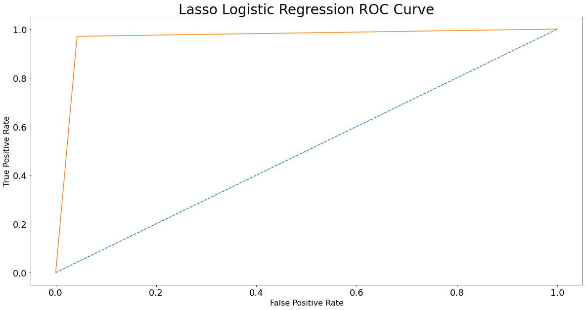

Part 2
Part 2¶
from IPython.core.interactiveshell import InteractiveShell
InteractiveShell.ast_node_interactivity = "all"
import numpy as np
from scipy import signal
import matplotlib.pyplot as plt
%matplotlib inline
np.random.seed = 1
N = 1000
fs = 500
w = np.arange(1,N+1) * 2 * np.pi/fs
t = np.arange(1,N+1)/fs
x = 0.75 * np.sin(w*5)
y = signal.sawtooth(w*7, 0.5)
d1 = 0.5*y + 0.5*x + 0.1*np.random.rand(1,N)
d2 = 0.2*y + 0.75*x + 0.15*np.random.rand(1,N)
d3 = 0.7*y + 0.25*x + 0.1*np.random.rand(1,N)
d4 = -0.5*y + 0.4*x + 0.2*np.random.rand(1,N)
d5 = 0.6*np.random.rand(1,N)
d1 = d1 - d1.mean()
d2 = d2 - d2.mean()
d3 = d3 - d3.mean()
d4 = d4 - d4.mean()
d5 = d5 - d5.mean()
plt.plot(d1.transpose())
[<matplotlib.lines.Line2D at 0x7fc355c1f700>]
plt.plot(t, x)
[<matplotlib.lines.Line2D at 0x7fc355396be0>]

plt.plot(t, y)
[<matplotlib.lines.Line2D at 0x7fc355317bb0>]

import numpy as np
X = np.array([d1[0], d2[0], d3[0], d4[0], d5[0]])
X
array([[-0.48848322, -0.42493524, -0.36795879, ..., -0.48826407,
-0.54410648, -0.5024603 ],
[-0.10298565, -0.14854481, -0.04953164, ..., -0.246756 ,
-0.15729975, -0.23411322],
[-0.67916626, -0.59415066, -0.5911512 , ..., -0.60569686,
-0.67308334, -0.73744081],
[ 0.45556874, 0.39800895, 0.55794919, ..., 0.41672444,
0.41938213, 0.40695895],
[-0.13259397, 0.0471761 , 0.29256532, ..., -0.28630079,
0.21814862, -0.20643906]])
X.shape
(5, 1000)
U,S,V = np.linalg.svd(X)
S
array([20.93398739, 14.23037411, 5.40176129, 1.43439745, 0.94806228])
eigen = S**2
eigen
array([438.23182808, 202.50354741, 29.17902503, 2.05749605,
0.89882208])
eigen
array([438.23182808, 202.50354741, 29.17902503, 2.05749605,
0.89882208])
for i in range(5):
V[:,i] = V[:,i] * np.sqrt(eigen[i])
eigen = eigen/N
eigen = eigen/sum(eigen)
eigen
array([0.65128682, 0.30095461, 0.04336498, 0.00305779, 0.0013358 ])
plt.plot(range(1,6), eigen)
[<matplotlib.lines.Line2D at 0x7fc355297460>]
plt.plot(V[:,0])
plt.show()
[<matplotlib.lines.Line2D at 0x7fc354a68340>]
plt.plot(V[:,1])
plt.show()
[<matplotlib.lines.Line2D at 0x7fc3549c8ca0>]

plt.plot(V[:,2])
plt.show()
[<matplotlib.lines.Line2D at 0x7fc3549a9bb0>]

import matplotlib.pyplot as plt
from mpl_toolkits.mplot3d import Axes3D
from sklearn import datasets
from sklearn.decomposition import PCA
# import some data to play with
iris = datasets.load_iris()
X = iris.data[:, :2] # we only take the first two features.
y = iris.target
x_min, x_max = X[:, 0].min() - .5, X[:, 0].max() + .5
y_min, y_max = X[:, 1].min() - .5, X[:, 1].max() + .5
plt.figure(2, figsize=(8, 6))
plt.clf()
# Plot the training points
plt.scatter(X[:, 0], X[:, 1], c=y, cmap=plt.cm.Set1,
edgecolor='k')
plt.xlabel('Sepal length')
plt.ylabel('Sepal width')
plt.xlim(x_min, x_max)
plt.ylim(y_min, y_max)
plt.xticks(())
plt.yticks(())
# To getter a better understanding of interaction of the dimensions
# plot the first three PCA dimensions
fig = plt.figure(1, figsize=(8, 6))
ax = Axes3D(fig, elev=-150, azim=110)
X_reduced = PCA(n_components=3).fit_transform(iris.data)
ax.scatter(X_reduced[:, 0], X_reduced[:, 1], X_reduced[:, 2], c=y,
cmap=plt.cm.Set1, edgecolor='k', s=40)
ax.set_title("First three PCA directions")
ax.set_xlabel("1st eigenvector")
ax.w_xaxis.set_ticklabels([])
ax.set_ylabel("2nd eigenvector")
ax.w_yaxis.set_ticklabels([])
ax.set_zlabel("3rd eigenvector")
ax.w_zaxis.set_ticklabels([])
plt.show()
<Figure size 576x432 with 0 Axes>
<matplotlib.collections.PathCollection at 0x7fc3526b9520>
Text(0.5, 0, 'Sepal length')
Text(0, 0.5, 'Sepal width')
(3.8, 8.4)
(1.5, 4.9)
([], [])
([], [])
/tmp/ipykernel_8911/1367415577.py:31: MatplotlibDeprecationWarning: Axes3D(fig) adding itself to the figure is deprecated since 3.4. Pass the keyword argument auto_add_to_figure=False and use fig.add_axes(ax) to suppress this warning. The default value of auto_add_to_figure will change to False in mpl3.5 and True values will no longer work in 3.6. This is consistent with other Axes classes.
ax = Axes3D(fig, elev=-150, azim=110)
<mpl_toolkits.mplot3d.art3d.Path3DCollection at 0x7fc352689e20>
Text(0.5, 0.92, 'First three PCA directions')
Text(0.5, 0, '1st eigenvector')
[Text(-4.0, 0, ''),
Text(-3.0, 0, ''),
Text(-2.0, 0, ''),
Text(-1.0, 0, ''),
Text(0.0, 0, ''),
Text(1.0, 0, ''),
Text(2.0, 0, ''),
Text(3.0, 0, ''),
Text(4.0, 0, ''),
Text(5.0, 0, '')]
Text(0.5, 0, '2nd eigenvector')
[Text(-1.5, 0, ''),
Text(-1.0, 0, ''),
Text(-0.5, 0, ''),
Text(0.0, 0, ''),
Text(0.5, 0, ''),
Text(1.0, 0, ''),
Text(1.5, 0, ''),
Text(2.0, 0, '')]
Text(0.5, 0, '3rd eigenvector')
[Text(-0.8, 0, ''),
Text(-0.6000000000000001, 0, ''),
Text(-0.4, 0, ''),
Text(-0.19999999999999996, 0, ''),
Text(0.0, 0, ''),
Text(0.19999999999999996, 0, ''),
Text(0.40000000000000013, 0, ''),
Text(0.6000000000000001, 0, ''),
Text(0.8, 0, ''),
Text(1.0, 0, '')]
iris = datasets.load_iris()
X = iris.data[:50,:]
X2 = X +0.05*np.random.rand(50,4)
X_combined = np.zeros((50,8))
X_combined[:,0:4] = X
X_combined[:,4:] = X2
X_combined
array([[5.1 , 3.5 , 1.4 , 0.2 , 5.10809446,
3.50378912, 1.42015355, 0.20599173],
[4.9 , 3. , 1.4 , 0.2 , 4.94381114,
3.01041374, 1.42058259, 0.23819651],
[4.7 , 3.2 , 1.3 , 0.2 , 4.73117872,
3.24310472, 1.31736723, 0.24216133],
[4.6 , 3.1 , 1.5 , 0.2 , 4.61891101,
3.11164567, 1.51576337, 0.22654594],
[5. , 3.6 , 1.4 , 0.2 , 5.01690413,
3.61714885, 1.44234503, 0.23913362],
[5.4 , 3.9 , 1.7 , 0.4 , 5.44947289,
3.9135918 , 1.70432658, 0.44663926],
[4.6 , 3.4 , 1.4 , 0.3 , 4.63531794,
3.43831203, 1.41214908, 0.33370069],
[5. , 3.4 , 1.5 , 0.2 , 5.02667584,
3.4118032 , 1.5010816 , 0.21305978],
[4.4 , 2.9 , 1.4 , 0.2 , 4.40989979,
2.94165326, 1.44314188, 0.21801562],
[4.9 , 3.1 , 1.5 , 0.1 , 4.9338495 ,
3.1221926 , 1.52373532, 0.13860374],
[5.4 , 3.7 , 1.5 , 0.2 , 5.41072567,
3.7082517 , 1.53848626, 0.22704575],
[4.8 , 3.4 , 1.6 , 0.2 , 4.81398531,
3.44495897, 1.60490536, 0.24740206],
[4.8 , 3. , 1.4 , 0.1 , 4.83035114,
3.01836886, 1.42960292, 0.1206556 ],
[4.3 , 3. , 1.1 , 0.1 , 4.32282504,
3.01235599, 1.10168172, 0.10808496],
[5.8 , 4. , 1.2 , 0.2 , 5.80192026,
4.04398812, 1.21130809, 0.21004854],
[5.7 , 4.4 , 1.5 , 0.4 , 5.74097674,
4.40472628, 1.53088679, 0.40281659],
[5.4 , 3.9 , 1.3 , 0.4 , 5.44133182,
3.92431521, 1.34610855, 0.43198092],
[5.1 , 3.5 , 1.4 , 0.3 , 5.12277978,
3.52878464, 1.41403034, 0.34765825],
[5.7 , 3.8 , 1.7 , 0.3 , 5.7244161 ,
3.8450854 , 1.7353106 , 0.33946251],
[5.1 , 3.8 , 1.5 , 0.3 , 5.11882796,
3.84251332, 1.53575565, 0.33186221],
[5.4 , 3.4 , 1.7 , 0.2 , 5.41117334,
3.41119094, 1.73185885, 0.24279576],
[5.1 , 3.7 , 1.5 , 0.4 , 5.12202103,
3.74219794, 1.50724619, 0.41752582],
[4.6 , 3.6 , 1. , 0.2 , 4.64651463,
3.63456158, 1.01181282, 0.22605433],
[5.1 , 3.3 , 1.7 , 0.5 , 5.11519551,
3.31717512, 1.70258056, 0.53158393],
[4.8 , 3.4 , 1.9 , 0.2 , 4.81290366,
3.43051624, 1.91145234, 0.24024827],
[5. , 3. , 1.6 , 0.2 , 5.00934574,
3.01147202, 1.64566575, 0.23509781],
[5. , 3.4 , 1.6 , 0.4 , 5.03416051,
3.44310046, 1.63530667, 0.44520996],
[5.2 , 3.5 , 1.5 , 0.2 , 5.23998068,
3.54795531, 1.52760171, 0.23574857],
[5.2 , 3.4 , 1.4 , 0.2 , 5.21404964,
3.42529982, 1.40386029, 0.23027222],
[4.7 , 3.2 , 1.6 , 0.2 , 4.73218553,
3.23053754, 1.61053115, 0.22539053],
[4.8 , 3.1 , 1.6 , 0.2 , 4.81357414,
3.10816268, 1.62746585, 0.20721034],
[5.4 , 3.4 , 1.5 , 0.4 , 5.4032619 ,
3.41677551, 1.52483674, 0.42427319],
[5.2 , 4.1 , 1.5 , 0.1 , 5.2385471 ,
4.14153807, 1.51189933, 0.1006137 ],
[5.5 , 4.2 , 1.4 , 0.2 , 5.52976989,
4.23713482, 1.44432458, 0.24646334],
[4.9 , 3.1 , 1.5 , 0.2 , 4.94913599,
3.11534303, 1.51564307, 0.21684563],
[5. , 3.2 , 1.2 , 0.2 , 5.04407837,
3.22396305, 1.23502144, 0.24450441],
[5.5 , 3.5 , 1.3 , 0.2 , 5.54977234,
3.51259187, 1.33386153, 0.23903388],
[4.9 , 3.6 , 1.4 , 0.1 , 4.91629734,
3.61411257, 1.40841136, 0.12887213],
[4.4 , 3. , 1.3 , 0.2 , 4.41704149,
3.02162548, 1.32973543, 0.22955219],
[5.1 , 3.4 , 1.5 , 0.2 , 5.12354069,
3.43738891, 1.52855607, 0.24865175],
[5. , 3.5 , 1.3 , 0.3 , 5.0031769 ,
3.53395125, 1.32829813, 0.31439723],
[4.5 , 2.3 , 1.3 , 0.3 , 4.51168449,
2.33813705, 1.34694819, 0.31089346],
[4.4 , 3.2 , 1.3 , 0.2 , 4.43166701,
3.2293834 , 1.33605369, 0.2450665 ],
[5. , 3.5 , 1.6 , 0.6 , 5.00881356,
3.51803923, 1.60927436, 0.60435778],
[5.1 , 3.8 , 1.9 , 0.4 , 5.10743254,
3.83758552, 1.92638027, 0.40352726],
[4.8 , 3. , 1.4 , 0.3 , 4.81612836,
3.02536685, 1.40589865, 0.33181733],
[5.1 , 3.8 , 1.6 , 0.2 , 5.12990486,
3.80932841, 1.60866743, 0.21808273],
[4.6 , 3.2 , 1.4 , 0.2 , 4.63447978,
3.24658077, 1.44642279, 0.233299 ],
[5.3 , 3.7 , 1.5 , 0.2 , 5.34570022,
3.73632191, 1.52905649, 0.24208443],
[5. , 3.3 , 1.4 , 0.2 , 5.02597908,
3.31204452, 1.43669975, 0.24746386]])
X_combined.mean(axis=0)
array([5.006 , 3.428 , 1.462 , 0.246 , 5.03079543,
3.45392771, 1.48540188, 0.27472006])
from sklearn import preprocessing
X_scaled = preprocessing.scale(X_combined)
X_scaled
array([[ 0.26938189, 0.19186974, -0.36063582, -0.44092382, 0.22094477,
0.13236613, -0.38146775, -0.66380969],
[-0.30377107, -1.14055903, -0.36063582, -0.44092382, -0.24862828,
-1.17738788, -0.37895937, -0.35276114],
[-0.87692403, -0.60758752, -0.9423065 , -0.44092382, -0.85639814,
-0.55966767, -0.98239751, -0.31446713],
[-1.16350052, -0.87407328, 0.22103486, -0.44092382, -1.17729433,
-0.90864945, 0.17750535, -0.46528773],
[-0.01719459, 0.4583555 , -0.36063582, -0.44092382, -0.03970566,
0.43329998, -0.25172748, -0.34371015],
[ 1.12911134, 1.25781276, 1.38437621, 1.47613628, 1.19671094,
1.2202613 , 1.27992103, 1.66047448],
[-1.16350052, -0.07461601, -0.36063582, 0.51760623, -1.1303982 ,
-0.04145463, -0.42826506, 0.56966199],
[-0.01719459, -0.07461601, 0.22103486, -0.44092382, -0.01177509,
-0.1118271 , 0.09166988, -0.59554326],
[-1.73665348, -1.40704478, -0.36063582, -0.44092382, -1.77471367,
-1.35992498, -0.24706877, -0.54767743],
[-0.30377107, -0.87407328, 0.22103486, -1.39945388, -0.27710175,
-0.88065071, 0.22411254, -1.3146738 ],
[ 1.12911134, 0.72484125, 0.22103486, -0.44092382, 1.08595929,
0.67514894, 0.31035245, -0.46046033],
[-0.59034755, -0.07461601, 0.80270553, -0.44092382, -0.61971106,
-0.02380913, 0.69866499, -0.26384971],
[-0.59034755, -1.14055903, -0.36063582, -1.39945388, -0.57293238,
-1.15626956, -0.32622296, -1.48802513],
[-2.02322996, -1.14055903, -2.10564785, -1.39945388, -2.0236005 ,
-1.17223183, -2.24338092, -1.6094382 ],
[ 2.27541727, 1.52429852, -1.52397717, -0.44092382, 2.20411563,
1.56642186, -1.60246152, -0.6246272 ],
[ 1.98884078, 2.59024154, 0.22103486, 1.47613628, 2.02992 ,
2.52406641, 0.26592289, 1.23721502],
[ 1.12911134, 1.25781276, -0.9423065 , 1.47613628, 1.17344122,
1.24872852, -0.81436432, 1.51889743],
[ 0.26938189, 0.19186974, -0.36063582, 0.51760623, 0.26291999,
0.19872124, -0.41726644, 0.70447046],
[ 1.98884078, 0.99132701, 1.38437621, 0.51760623, 1.98258453,
1.0383987 , 1.46106597, 0.62531223],
[ 0.26938189, 0.99132701, 0.22103486, 0.51760623, 0.25162447,
1.03157064, 0.29438822, 0.55190509],
[ 1.12911134, -0.07461601, 1.38437621, -0.44092382, 1.08723887,
-0.11345247, 1.44088567, -0.30833949],
[ 0.26938189, 0.72484125, 0.22103486, 1.47613628, 0.26075126,
0.76526535, 0.12771056, 1.3792835 ],
[-1.16350052, 0.4583555 , -2.68731853, -0.44092382, -1.09839456,
0.47952521, -2.76879033, -0.47003596],
[ 0.26938189, -0.34110177, 1.38437621, 2.43466633, 0.24124178,
-0.36303442, 1.26971308, 2.48090899],
[-0.59034755, -0.07461601, 2.54771757, -0.44092382, -0.62280273,
-0.06214996, 2.49086072, -0.33294431],
[-0.01719459, -1.14055903, 0.80270553, -0.44092382, -0.06130993,
-1.17457847, 0.93696647, -0.38268984],
[-0.01719459, -0.07461601, 0.80270553, 1.47613628, 0.00961846,
-0.02874288, 0.87640313, 1.64666956],
[ 0.55595837, 0.19186974, 0.22103486, -0.44092382, 0.59791679,
0.24961324, 0.24671702, -0.37640454],
[ 0.55595837, -0.07461601, -0.36063582, -0.44092382, 0.52379777,
-0.0759979 , -0.47672461, -0.42929761],
[-0.87692403, -0.60758752, 0.80270553, -0.44092382, -0.85352038,
-0.59302952, 0.7315556 , -0.47644716],
[-0.59034755, -0.87407328, 0.80270553, -0.44092382, -0.62088631,
-0.91789566, 0.83056257, -0.65203984],
[ 1.12911134, -0.07461601, 0.22103486, 1.47613628, 1.06462552,
-0.09862722, 0.2305519 , 1.44445268],
[ 0.55595837, 1.79078427, 0.22103486, -1.39945388, 0.59381915,
1.82538581, 0.15491462, -1.68159899],
[ 1.41568782, 2.05727003, -0.36063582, -0.44092382, 1.42622487,
2.07916464, -0.24015424, -0.27291631],
[-0.30377107, -0.87407328, 0.22103486, -0.44092382, -0.23340819,
-0.89883414, 0.17680204, -0.55897773],
[-0.01719459, -0.60758752, -1.52397717, -0.44092382, 0.03796678,
-0.61048268, -1.46382381, -0.29183663],
[ 1.41568782, 0.19186974, -0.9423065 , -0.44092382, 1.48339809,
0.15573461, -0.88596525, -0.34467343],
[-0.30377107, 0.4583555 , -0.36063582, -1.39945388, -0.32727131,
0.42523962, -0.45011725, -1.40866616],
[-1.73665348, -1.14055903, -0.9423065 , -0.44092382, -1.75430047,
-1.14762429, -0.91008808, -0.43625199],
[ 0.26938189, -0.07461601, 0.22103486, -0.44092382, 0.26509493,
-0.04390523, 0.25229656, -0.25177965],
[-0.01719459, 0.19186974, -0.9423065 , 0.51760623, -0.07894239,
0.21243694, -0.91849114, 0.38322029],
[-1.450077 , -3.00595931, -0.9423065 , 0.51760623, -1.48378122,
-2.96206768, -0.80945542, 0.34937931],
[-1.73665348, -0.60758752, -0.9423065 , -0.44092382, -1.71249616,
-0.59609338, -0.87314905, -0.28640768],
[-0.01719459, 0.19186974, 0.80270553, 3.39319638, -0.06283107,
0.17019562, 0.72420785, 3.18379217],
[ 0.26938189, 0.99132701, 2.54771757, 1.47613628, 0.21905279,
1.01848891, 2.57813537, 1.24407902],
[-0.59034755, -1.14055903, -0.36063582, 0.51760623, -0.61358554,
-1.13769214, -0.46480759, 0.55147161],
[ 0.26938189, 0.99132701, 0.80270553, -0.44092382, 0.28328571,
0.94347533, 0.72065951, -0.54702931],
[-1.16350052, -0.60758752, -0.36063582, -0.44092382, -1.13279392,
-0.55043988, -0.22788727, -0.40006358],
[ 0.84253486, 0.72484125, 0.22103486, -0.44092382, 0.90009625,
0.7496664 , 0.25522223, -0.31520985],
[-0.01719459, -0.34110177, -0.36063582, -0.44092382, -0.01376664,
-0.37665453, -0.28473206, -0.26325285]])
X_scaled.mean(axis=0)
array([ 1.87003191e-15, -2.20823360e-15, -1.17128529e-15, 9.17044218e-16,
1.73853987e-15, 2.40918396e-16, 3.03090886e-16, -1.22124533e-17])
U,S,V = np.linalg.svd(X_scaled)
S
array([14.33789982, 10.12456286, 8.13123132, 5.01310312, 0.68317133,
0.38239396, 0.17760303, 0.15886724])
eigen = S**2
eigen
array([2.05575371e+02, 1.02506773e+02, 6.61169229e+01, 2.51312029e+01,
4.66723059e-01, 1.46225138e-01, 3.15428377e-02, 2.52388001e-02])
eigen = eigen/50
eigen = eigen/sum(eigen)
eigen = np.round(eigen*100)/100
print(eigen)
[0.51 0.26 0.17 0.06 0. 0. 0. 0. ]
sum([0.51, 0.26, 0.17, 0.06])
1.0
plt.plot(range(1, 9), eigen)
[<matplotlib.lines.Line2D at 0x7fc350daf580>]
X_reduced = PCA(n_components=3).fit_transform(X_scaled)
# https://towardsdatascience.com/machine-learning-algorithms-part-9-k-means-example-in-python-f2ad05ed5203
# https://blog.floydhub.com/introduction-to-k-means-clustering-in-python-with-scikit-learn/
from sklearn.datasets import make_blobs
plt.title("Three blobs", fontsize='small')
X1, Y1 = make_blobs(n_features=2, centers=3, random_state=10)
plt.scatter(X1[:, 0], X1[:, 1], marker='o', c=Y1,
s=25, edgecolor='k')
Text(0.5, 1.0, 'Three blobs')
<matplotlib.collections.PathCollection at 0x7fc350d8ffd0>
# Using scikit-learn to perform K-Means clustering
from sklearn.cluster import KMeans
# Specify the number of clusters (3) and fit the data X
kmeans = KMeans(n_clusters=3, random_state=0).fit(X1)
# Get the cluster centroids
# Plotting the cluster centers and the data points on a 2D plane
plt.scatter(X1[:, 0], X1[:, 1], marker='o', c=Y1,
s=25, edgecolor='k')
plt.scatter(kmeans.cluster_centers_[:, 0], kmeans.cluster_centers_[:, 1], c='red', marker='x')
plt.title('Data points and cluster centroids')
plt.show()
<matplotlib.collections.PathCollection at 0x7fc350796dc0>
<matplotlib.collections.PathCollection at 0x7fc350dc6fd0>
Text(0.5, 1.0, 'Data points and cluster centroids')
# https://jakevdp.github.io/PythonDataScienceHandbook/05.07-support-vector-machines.html
# https://scikit-learn.org/stable/auto_examples/linear_model/plot_ransac.html
# http://www.cse.psu.edu/~rtc12/CSE486/lecture15.pdf
# https://towardsdatascience.com/accuracy-precision-recall-or-f1-331fb37c5cb9
from sklearn.datasets import load_breast_cancer
data = load_breast_cancer()
X = data.data
Y = data.target
from sklearn.metrics import accuracy_score
from sklearn.metrics import confusion_matrix
from sklearn.metrics import classification_report
print(data.DESCR)
data.target_names
.. _breast_cancer_dataset:
Breast cancer wisconsin (diagnostic) dataset
--------------------------------------------
**Data Set Characteristics:**
:Number of Instances: 569
:Number of Attributes: 30 numeric, predictive attributes and the class
:Attribute Information:
- radius (mean of distances from center to points on the perimeter)
- texture (standard deviation of gray-scale values)
- perimeter
- area
- smoothness (local variation in radius lengths)
- compactness (perimeter^2 / area - 1.0)
- concavity (severity of concave portions of the contour)
- concave points (number of concave portions of the contour)
- symmetry
- fractal dimension ("coastline approximation" - 1)
The mean, standard error, and "worst" or largest (mean of the three
worst/largest values) of these features were computed for each image,
resulting in 30 features. For instance, field 0 is Mean Radius, field
10 is Radius SE, field 20 is Worst Radius.
- class:
- WDBC-Malignant
- WDBC-Benign
:Summary Statistics:
===================================== ====== ======
Min Max
===================================== ====== ======
radius (mean): 6.981 28.11
texture (mean): 9.71 39.28
perimeter (mean): 43.79 188.5
area (mean): 143.5 2501.0
smoothness (mean): 0.053 0.163
compactness (mean): 0.019 0.345
concavity (mean): 0.0 0.427
concave points (mean): 0.0 0.201
symmetry (mean): 0.106 0.304
fractal dimension (mean): 0.05 0.097
radius (standard error): 0.112 2.873
texture (standard error): 0.36 4.885
perimeter (standard error): 0.757 21.98
area (standard error): 6.802 542.2
smoothness (standard error): 0.002 0.031
compactness (standard error): 0.002 0.135
concavity (standard error): 0.0 0.396
concave points (standard error): 0.0 0.053
symmetry (standard error): 0.008 0.079
fractal dimension (standard error): 0.001 0.03
radius (worst): 7.93 36.04
texture (worst): 12.02 49.54
perimeter (worst): 50.41 251.2
area (worst): 185.2 4254.0
smoothness (worst): 0.071 0.223
compactness (worst): 0.027 1.058
concavity (worst): 0.0 1.252
concave points (worst): 0.0 0.291
symmetry (worst): 0.156 0.664
fractal dimension (worst): 0.055 0.208
===================================== ====== ======
:Missing Attribute Values: None
:Class Distribution: 212 - Malignant, 357 - Benign
:Creator: Dr. William H. Wolberg, W. Nick Street, Olvi L. Mangasarian
:Donor: Nick Street
:Date: November, 1995
This is a copy of UCI ML Breast Cancer Wisconsin (Diagnostic) datasets.
https://goo.gl/U2Uwz2
Features are computed from a digitized image of a fine needle
aspirate (FNA) of a breast mass. They describe
characteristics of the cell nuclei present in the image.
Separating plane described above was obtained using
Multisurface Method-Tree (MSM-T) [K. P. Bennett, "Decision Tree
Construction Via Linear Programming." Proceedings of the 4th
Midwest Artificial Intelligence and Cognitive Science Society,
pp. 97-101, 1992], a classification method which uses linear
programming to construct a decision tree. Relevant features
were selected using an exhaustive search in the space of 1-4
features and 1-3 separating planes.
The actual linear program used to obtain the separating plane
in the 3-dimensional space is that described in:
[K. P. Bennett and O. L. Mangasarian: "Robust Linear
Programming Discrimination of Two Linearly Inseparable Sets",
Optimization Methods and Software 1, 1992, 23-34].
This database is also available through the UW CS ftp server:
ftp ftp.cs.wisc.edu
cd math-prog/cpo-dataset/machine-learn/WDBC/
.. topic:: References
- W.N. Street, W.H. Wolberg and O.L. Mangasarian. Nuclear feature extraction
for breast tumor diagnosis. IS&T/SPIE 1993 International Symposium on
Electronic Imaging: Science and Technology, volume 1905, pages 861-870,
San Jose, CA, 1993.
- O.L. Mangasarian, W.N. Street and W.H. Wolberg. Breast cancer diagnosis and
prognosis via linear programming. Operations Research, 43(4), pages 570-577,
July-August 1995.
- W.H. Wolberg, W.N. Street, and O.L. Mangasarian. Machine learning techniques
to diagnose breast cancer from fine-needle aspirates. Cancer Letters 77 (1994)
163-171.
array(['malignant', 'benign'], dtype='<U9')
data.target
array([0, 0, 0, 0, 0, 0, 0, 0, 0, 0, 0, 0, 0, 0, 0, 0, 0, 0, 0, 1, 1, 1,
0, 0, 0, 0, 0, 0, 0, 0, 0, 0, 0, 0, 0, 0, 0, 1, 0, 0, 0, 0, 0, 0,
0, 0, 1, 0, 1, 1, 1, 1, 1, 0, 0, 1, 0, 0, 1, 1, 1, 1, 0, 1, 0, 0,
1, 1, 1, 1, 0, 1, 0, 0, 1, 0, 1, 0, 0, 1, 1, 1, 0, 0, 1, 0, 0, 0,
1, 1, 1, 0, 1, 1, 0, 0, 1, 1, 1, 0, 0, 1, 1, 1, 1, 0, 1, 1, 0, 1,
1, 1, 1, 1, 1, 1, 1, 0, 0, 0, 1, 0, 0, 1, 1, 1, 0, 0, 1, 0, 1, 0,
0, 1, 0, 0, 1, 1, 0, 1, 1, 0, 1, 1, 1, 1, 0, 1, 1, 1, 1, 1, 1, 1,
1, 1, 0, 1, 1, 1, 1, 0, 0, 1, 0, 1, 1, 0, 0, 1, 1, 0, 0, 1, 1, 1,
1, 0, 1, 1, 0, 0, 0, 1, 0, 1, 0, 1, 1, 1, 0, 1, 1, 0, 0, 1, 0, 0,
0, 0, 1, 0, 0, 0, 1, 0, 1, 0, 1, 1, 0, 1, 0, 0, 0, 0, 1, 1, 0, 0,
1, 1, 1, 0, 1, 1, 1, 1, 1, 0, 0, 1, 1, 0, 1, 1, 0, 0, 1, 0, 1, 1,
1, 1, 0, 1, 1, 1, 1, 1, 0, 1, 0, 0, 0, 0, 0, 0, 0, 0, 0, 0, 0, 0,
0, 0, 1, 1, 1, 1, 1, 1, 0, 1, 0, 1, 1, 0, 1, 1, 0, 1, 0, 0, 1, 1,
1, 1, 1, 1, 1, 1, 1, 1, 1, 1, 1, 0, 1, 1, 0, 1, 0, 1, 1, 1, 1, 1,
1, 1, 1, 1, 1, 1, 1, 1, 1, 0, 1, 1, 1, 0, 1, 0, 1, 1, 1, 1, 0, 0,
0, 1, 1, 1, 1, 0, 1, 0, 1, 0, 1, 1, 1, 0, 1, 1, 1, 1, 1, 1, 1, 0,
0, 0, 1, 1, 1, 1, 1, 1, 1, 1, 1, 1, 1, 0, 0, 1, 0, 0, 0, 1, 0, 0,
1, 1, 1, 1, 1, 0, 1, 1, 1, 1, 1, 0, 1, 1, 1, 0, 1, 1, 0, 0, 1, 1,
1, 1, 1, 1, 0, 1, 1, 1, 1, 1, 1, 1, 0, 1, 1, 1, 1, 1, 0, 1, 1, 0,
1, 1, 1, 1, 1, 1, 1, 1, 1, 1, 1, 1, 0, 1, 0, 0, 1, 0, 1, 1, 1, 1,
1, 0, 1, 1, 0, 1, 0, 1, 1, 0, 1, 0, 1, 1, 1, 1, 1, 1, 1, 1, 0, 0,
1, 1, 1, 1, 1, 1, 0, 1, 1, 1, 1, 1, 1, 1, 1, 1, 1, 0, 1, 1, 1, 1,
1, 1, 1, 0, 1, 0, 1, 1, 0, 1, 1, 1, 1, 1, 0, 0, 1, 0, 1, 0, 1, 1,
1, 1, 1, 0, 1, 1, 0, 1, 0, 1, 0, 0, 1, 1, 1, 0, 1, 1, 1, 1, 1, 1,
1, 1, 1, 1, 1, 0, 1, 0, 0, 1, 1, 1, 1, 1, 1, 1, 1, 1, 1, 1, 1, 1,
1, 1, 1, 1, 1, 1, 1, 1, 1, 1, 1, 1, 0, 0, 0, 0, 0, 0, 1])
from sklearn.model_selection import train_test_split
X_train, X_test, Y_train, Y_test = train_test_split(X, Y, test_size = 0.25, random_state = 0)
from sklearn.preprocessing import StandardScaler
sc = StandardScaler()
X_train = sc.fit_transform(X_train)
X_test = sc.transform(X_test)
from sklearn.linear_model import LogisticRegression
classifier = LogisticRegression(random_state = 0)
classifier.fit(X_train, Y_train)
Y_pred = classifier.predict(X_test)
accuracy = accuracy_score(Y_test, Y_pred)
accuracy
LogisticRegression(random_state=0)
0.958041958041958
cm = confusion_matrix(Y_test, Y_pred)
cm
# tn, fp, fn, tp = confusion_matrix(Y_test, Y_pred).ravel()
#TN, FP, FN, TP
#
array([[50, 3],
[ 3, 87]])
tn, fp, fn, tp = confusion_matrix(Y_test, Y_pred).ravel()
tn
fp
fn
tp
50
3
3
87
# 380 b
# 20 m
TN = 380
TP = 0
TN, FP, FN, TP
https://stackoverflow.com/questions/56078203/why-scikit-learn-confusion-matrix-is-reversed
[[True Negative, False Positive] [False Negative, True Positive]]
Y_pred
Y_test
array([0, 1, 1, 1, 1, 1, 1, 1, 1, 1, 1, 1, 1, 0, 1, 0, 1, 0, 0, 0, 0, 0,
1, 1, 0, 1, 1, 0, 1, 0, 1, 0, 1, 0, 1, 0, 1, 0, 1, 0, 0, 1, 0, 1,
1, 0, 1, 1, 1, 0, 0, 0, 0, 1, 1, 1, 1, 1, 1, 0, 0, 0, 1, 1, 0, 1,
0, 0, 0, 1, 1, 0, 1, 0, 0, 1, 1, 1, 1, 1, 0, 0, 0, 1, 0, 1, 1, 1,
0, 0, 1, 0, 0, 0, 1, 1, 0, 1, 1, 1, 1, 1, 1, 1, 0, 1, 0, 1, 1, 1,
1, 0, 0, 1, 1, 1, 1, 1, 1, 1, 1, 1, 1, 1, 0, 1, 1, 1, 1, 1, 0, 1,
1, 1, 1, 1, 0, 0, 0, 1, 1, 1, 0])
array([0, 1, 1, 1, 1, 1, 1, 1, 1, 1, 1, 1, 1, 1, 1, 0, 1, 0, 0, 0, 0, 0,
1, 1, 0, 1, 1, 0, 1, 0, 1, 0, 1, 0, 1, 0, 1, 0, 1, 0, 0, 1, 0, 1,
1, 0, 1, 1, 1, 0, 0, 0, 0, 1, 1, 1, 1, 1, 1, 0, 0, 0, 1, 1, 0, 1,
0, 0, 0, 1, 1, 0, 1, 0, 0, 1, 1, 1, 1, 1, 0, 0, 0, 1, 0, 1, 1, 1,
0, 0, 1, 0, 1, 0, 1, 1, 0, 1, 1, 1, 1, 1, 1, 1, 0, 1, 0, 1, 0, 0,
1, 0, 0, 1, 1, 1, 1, 1, 1, 1, 1, 1, 0, 1, 0, 1, 1, 1, 1, 1, 0, 1,
1, 1, 1, 1, 1, 0, 0, 1, 1, 1, 0])
results = classification_report(Y_test, Y_pred)
print(results)
precision recall f1-score support
0 0.94 0.94 0.94 53
1 0.97 0.97 0.97 90
accuracy 0.96 143
macro avg 0.96 0.96 0.96 143
weighted avg 0.96 0.96 0.96 143
# precision measures how accurate our positive predictions were
# precision = tp / (tp+fp)
# recall measures what fraction of the positives our model identfied
# recall = tp / (tp+fn)
from sklearn.neighbors import KNeighborsClassifier
classifier = KNeighborsClassifier(n_neighbors = 5, metric = 'minkowski', p = 2)
classifier.fit(X_train, Y_train)
Y_pred = classifier.predict(X_test)
accuracy = accuracy_score(Y_test, Y_pred)
accuracy
cm = confusion_matrix(Y_test, Y_pred)
cm
KNeighborsClassifier()
0.951048951048951
array([[47, 6],
[ 1, 89]])
print(accuracy)
0.951048951048951
results = classification_report(Y_test, Y_pred)
print(results)
precision recall f1-score support
0 0.98 0.89 0.93 53
1 0.94 0.99 0.96 90
accuracy 0.95 143
macro avg 0.96 0.94 0.95 143
weighted avg 0.95 0.95 0.95 143
from sklearn.svm import SVC
classifier = SVC(kernel = 'linear', random_state = 0)
classifier.fit(X_train, Y_train)
Y_pred = classifier.predict(X_test)
accuracy = accuracy_score(Y_test, Y_pred)
accuracy
cm = confusion_matrix(Y_test, Y_pred)
cm
SVC(kernel='linear', random_state=0)
0.972027972027972
array([[51, 2],
[ 2, 88]])
results = classification_report(Y_test, Y_pred)
print(results)
precision recall f1-score support
0 0.96 0.96 0.96 53
1 0.98 0.98 0.98 90
accuracy 0.97 143
macro avg 0.97 0.97 0.97 143
weighted avg 0.97 0.97 0.97 143
from sklearn.svm import SVC
classifier = SVC(kernel = 'rbf', random_state = 0)
classifier.fit(X_train, Y_train)
Y_pred = classifier.predict(X_test)
accuracy = accuracy_score(Y_test, Y_pred)
accuracy
cm = confusion_matrix(Y_test, Y_pred)
cm
SVC(random_state=0)
0.965034965034965
array([[50, 3],
[ 2, 88]])
results = classification_report(Y_test, Y_pred)
print(results)
precision recall f1-score support
0 0.96 0.94 0.95 53
1 0.97 0.98 0.97 90
accuracy 0.97 143
macro avg 0.96 0.96 0.96 143
weighted avg 0.96 0.97 0.96 143
from sklearn.naive_bayes import GaussianNB
classifier = GaussianNB()
classifier.fit(X_train, Y_train)
Y_pred = classifier.predict(X_test)
accuracy = accuracy_score(Y_test, Y_pred)
accuracy
cm = confusion_matrix(Y_test, Y_pred)
cm
GaussianNB()
0.916083916083916
array([[47, 6],
[ 6, 84]])
results = classification_report(Y_test, Y_pred)
print(results)
precision recall f1-score support
0 0.89 0.89 0.89 53
1 0.93 0.93 0.93 90
accuracy 0.92 143
macro avg 0.91 0.91 0.91 143
weighted avg 0.92 0.92 0.92 143
from sklearn.tree import DecisionTreeClassifier
classifier = DecisionTreeClassifier(criterion = 'entropy', random_state = 0)
classifier.fit(X_train, Y_train)
Y_pred = classifier.predict(X_test)
accuracy = accuracy_score(Y_test, Y_pred)
accuracy
cm = confusion_matrix(Y_test, Y_pred)
cm
DecisionTreeClassifier(criterion='entropy', random_state=0)
0.958041958041958
array([[51, 2],
[ 4, 86]])
results = classification_report(Y_test, Y_pred)
print(results)
precision recall f1-score support
0 0.93 0.96 0.94 53
1 0.98 0.96 0.97 90
accuracy 0.96 143
macro avg 0.95 0.96 0.96 143
weighted avg 0.96 0.96 0.96 143
from sklearn.ensemble import RandomForestClassifier
classifier = RandomForestClassifier(n_estimators = 10, criterion = 'entropy', random_state = 0)
classifier.fit(X_train, Y_train)
Y_pred = classifier.predict(X_test)
accuracy = accuracy_score(Y_test, Y_pred)
accuracy
cm = confusion_matrix(Y_test, Y_pred)
cm
from sklearn.metrics import fbeta_score
output = fbeta_score(Y_test, Y_pred, average='macro', beta=0.5)
output
RandomForestClassifier(criterion='entropy', n_estimators=10, random_state=0)
0.972027972027972
array([[52, 1],
[ 3, 87]])
0.9682719241542771
results = classification_report(Y_test, Y_pred)
print(results)
precision recall f1-score support
0 0.95 0.98 0.96 53
1 0.99 0.97 0.98 90
accuracy 0.97 143
macro avg 0.97 0.97 0.97 143
weighted avg 0.97 0.97 0.97 143
X_train, X_test, Y_train, Y_test = train_test_split(X, Y, test_size = 0.2, random_state = 0)
sc = StandardScaler()
X_train = sc.fit_transform(X_train)
X_test = sc.transform(X_test)
classifier = LogisticRegression(random_state = 0)
classifier.fit(X_train, Y_train)
Y_pred = classifier.predict(X_test)
accuracy = accuracy_score(Y_test, Y_pred)
accuracy
cm = confusion_matrix(Y_test, Y_pred)
cm
LogisticRegression(random_state=0)
0.9649122807017544
array([[45, 2],
[ 2, 65]])
from sklearn.metrics import classification_report
results = classification_report(Y_test, Y_pred)
print(results)
precision recall f1-score support
0 0.96 0.96 0.96 47
1 0.97 0.97 0.97 67
accuracy 0.96 114
macro avg 0.96 0.96 0.96 114
weighted avg 0.96 0.96 0.96 114
from sklearn.metrics import roc_auc_score
roc_auc = roc_auc_score(Y_test, Y_pred)
from sklearn import metrics
fpr, tpr, thresholds = metrics.roc_curve(Y_test, Y_pred)
plt.figure()
lw = 2
plt.plot(
fpr,
tpr,
color="darkorange",
lw=lw,
label="ROC curve (area = %0.2f)" % roc_auc,
)
plt.plot([0, 1], [0, 1], color="navy", lw=lw, linestyle="--")
plt.xlim([0.0, 1.0])
plt.ylim([0.0, 1.05])
plt.xlabel("False Positive Rate")
plt.ylabel("True Positive Rate")
plt.title("Receiver operating characteristic example")
plt.legend(loc="lower right")
plt.show()
<Figure size 432x288 with 0 Axes>
[<matplotlib.lines.Line2D at 0x7fc3506201f0>]
[<matplotlib.lines.Line2D at 0x7fc3506204c0>]
(0.0, 1.0)
(0.0, 1.05)
Text(0.5, 0, 'False Positive Rate')
Text(0, 0.5, 'True Positive Rate')
Text(0.5, 1.0, 'Receiver operating characteristic example')
<matplotlib.legend.Legend at 0x7fc3505f9c40>
# https://datascience-enthusiast.com/Python/ROC_Precision-Recall.html
from sklearn.datasets import make_classification
X, Y = make_classification(n_samples=100, n_features=4, weights = [0.90, 0.1], random_state=0)
import matplotlib.pyplot as plt
%matplotlib inline
from sklearn.metrics import roc_auc_score
from sklearn.metrics import roc_curve
fpr, tpr, thresholds = roc_curve(Y_test, Y_pred)
plt.figure(figsize = (20,10))
plt.plot([0, 1], [0, 1], linestyle = '--')
plt.plot(fpr, tpr)
plt.xlabel('False Positive Rate', fontsize = 16)
plt.ylabel('True Positive Rate', fontsize = 16)
plt.xticks(size = 18)
plt.yticks(size = 18)
plt.title('Lasso Logistic Regression ROC Curve', fontsize = 28)
plt.show();

from sklearn.metrics import precision_recall_curve
from sklearn.metrics import average_precision_score
precision, recall, thresholds = precision_recall_curve(Y_test, Y_pred)
plt.figure(figsize = (20,10))
plt.plot([0, 1], [0.01/0.98, 0.01/0.98], linestyle = '--')
plt.plot(recall, precision)
plt.xlabel('Recall', fontsize = 16)
plt.ylabel('Precision', fontsize = 16)
plt.xticks(size = 18)
plt.yticks(size = 18)
plt.title('Lasso Logistic Regression Precision-Recall Curve', fontsize = 28)
plt.show();

len(data.target)
569
sum(data.target)
357
569-357
212
212/569
0.37258347978910367